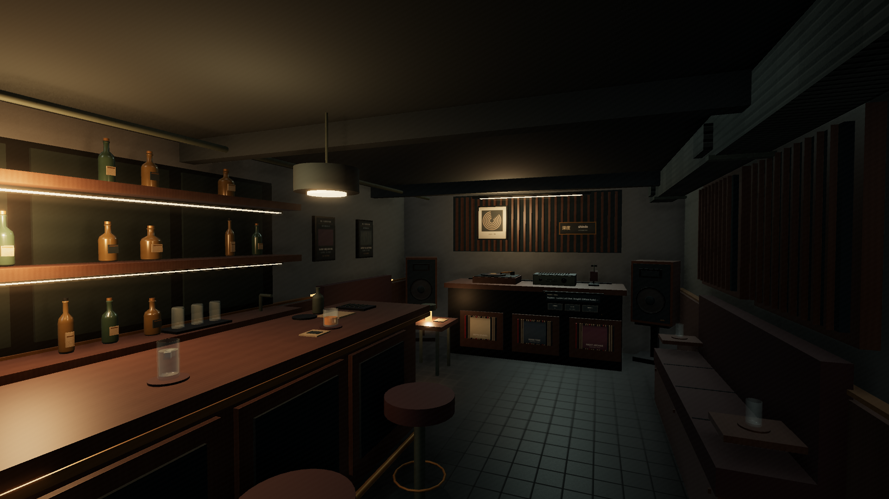
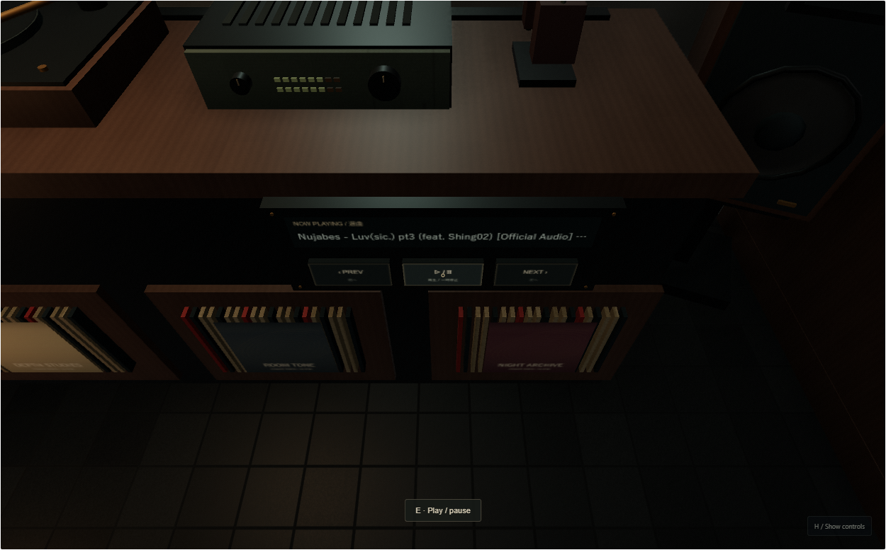

深度 / LISTENING BAR
shindo
A quieter selector console, restrained graphics, warm walnut and a working in-world player. Actual WebGL captures at 21:00, seed 8412. Four comparisons retain camera, lens, weather and simulation timestamp.

Final room atmosphere.
Before / after
Close inspection
Music in the room
Approach the rear cabinet. Aim at a transport button and press E, or click it while the pointer is released. H hides or restores the fallback HUD.

Playback started with E at the physical control panel; no HUD transport used.
Actual six-second canvas recording. Platter rotation and amplifier levels follow playback; personal audio is not exported.
Concise changes and checks · Open Shinmachi · Local music setup